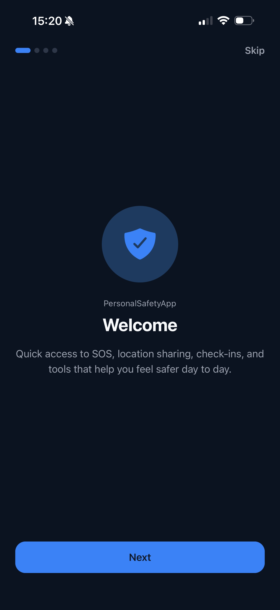
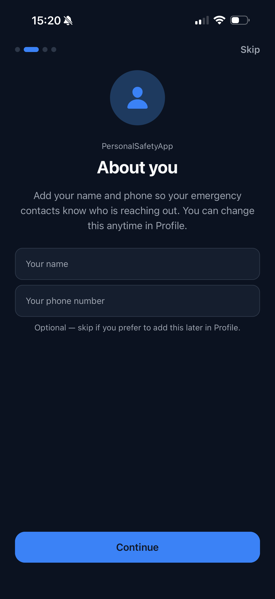
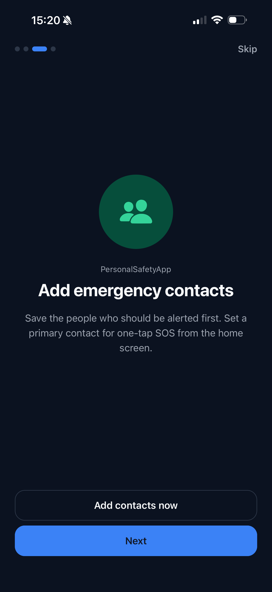
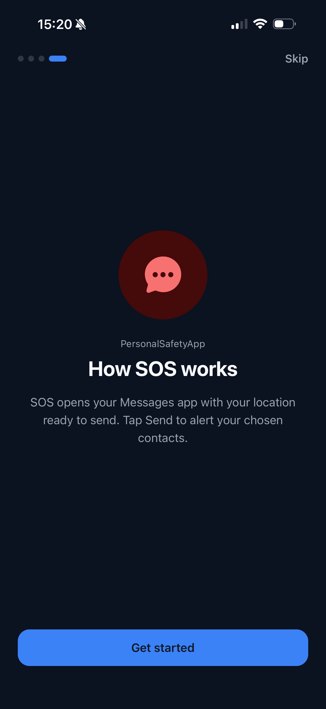
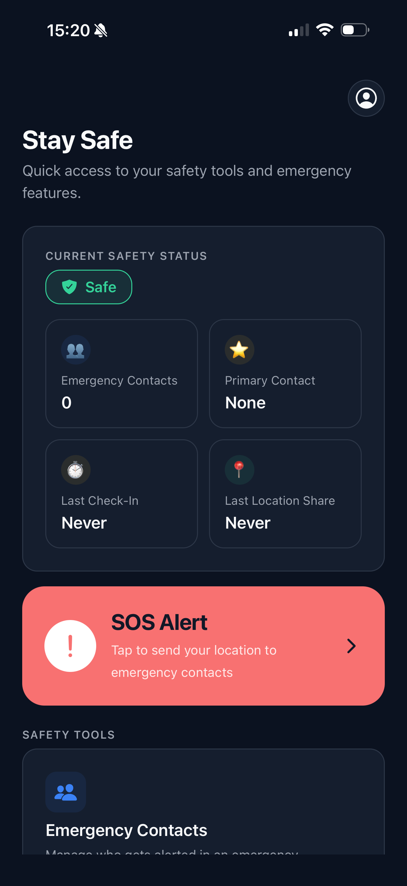
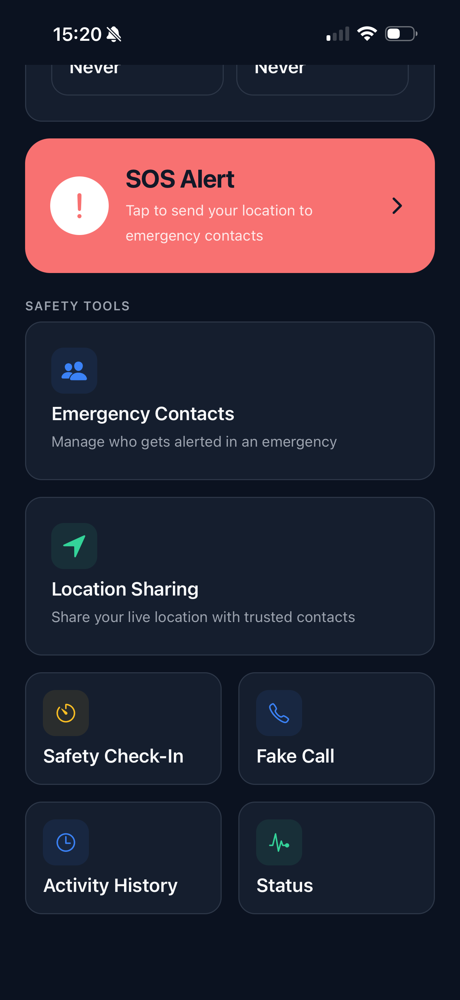

Personal Safety App
A cross-platform mobile application engineered with React Native, Expo, and TypeScript, utilizing native device hardware modules and strictly on-device data persistence.
Application Flow & Safety Tools
Explore the first-time setup flow, SOS alerting mechanics, and local safety utility screens.






Overview
Personal Safety App is a mobile utility built to provide immediate assistance in high-stress or emergency situations. Because emergency safety data (current location, personal contacts, movement logs) is highly sensitive, the application was architected with a strict privacy-first principle: all records, contact numbers, and event history remain stored locally on the device using AsyncStorage, with zero tracking or telemetry.
The Engineering Problem
Emergency utilities must guarantee high availability under adverse conditions: weak cellular data connections, locked screens, and stressful user interactions. Relying on remote cloud APIs to trigger SMS messages or store contact lists adds points of failure and privacy risks.
Technical Implementation & Hardware APIs
Built using React Native, Expo SDK 54, and TypeScript:
- Offline Data Persistence: Leverages AsyncStorage for on-device storage of user profile configurations, emergency contacts, and historical safety logs.
- One-Tap SOS Dispatch: Integrates Expo Location to capture high-accuracy GPS coordinates, generating pre-composed emergency SMS links via Expo SMS to instantly alert designated primary contacts.
- Native Contact Integration: Expo Contacts allows seamless selection from the user's phonebook, with fallback manual entry and validation.
- Safety Check-In Countdown: Configurable countdown timer with local push notifications and automated escalation alerts if a user fails to check in.
- Simulated Incoming Call: Integrates Expo AV (audio playback) and Expo Haptics (vibration patterns) to simulate incoming call rings, providing a realistic excuse to exit uncomfortable scenarios.
My Role & Contributions
Mobile Engineer: end-to-end implementation from UX design and component hierarchy to native hardware integration, TypeScript typing, and testing on physical mobile devices.
Key Challenges & Trade-offs
- Stress-Resilient UX: Designing clear, oversized touch targets with instant tactile feedback so actions can be taken quickly without visual ambiguity.
- Hardware Permissions Handling: Gracefully managing system permission denials (Location, SMS, Contacts) with clear fallback instructions.
Results
A responsive, tested cross-platform mobile application providing dependable safety workflows with uncompromising user privacy.